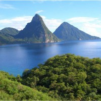
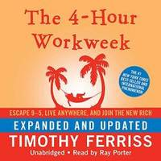

Though I do not have any real life experience in dealing with creating websites from scratch, I do have some experience and understanding of the tech field. I am currently pursuing my master's degree in cybersecurity and look forward to completing it.
My experience as a police officer taught me to adapt, overcome, and succeed in nearly every situation that I am placed in.
I currently work in the banking and finance industry, where I have to utilize logic on a daily basis. This has taught me to think clearly and with more decisiveness, leading me to make better decisions.
I enjoy traveling with my wife. We have been to many different countries and states around the USA, and only plan to visit more as time goes by. Traveling has made me appreciate different cultures, but also the freedoms that we enjoy here in America. It has broadened my world view and truly given me inspiration for what I would like to do in life.
We do not travel as often as we used to however, because in 2018, my wife gave birth to our first child, and our lives have changed forever.
Other than traveling, I enjoy reading a good book (mostly non-fiction) and playing videogames when the time calls for it.
 